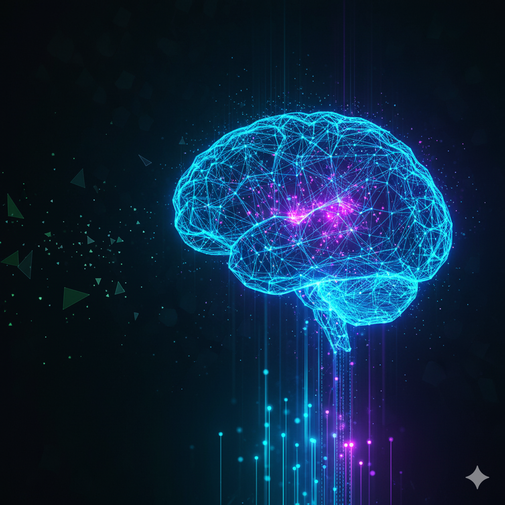

La Inteligencia Artificial (IA) es la rama de la tecnología que busca crear sistemas capaces de aprender, razonar y tomar decisiones como lo haría un ser humano.
Se basa en algoritmos y modelos matemáticos que permiten a las máquinas analizar datos, reconocer patrones y mejorar con la experiencia, sin necesidad de ser programadas de forma explícita para cada tarea.
Machine Learning (Aprendizaje Automático): las máquinas aprenden a partir de datos.
Procesamiento de Lenguaje Natural (PLN): permite que las computadoras entiendan y generen lenguaje humano.
Visión por Computadora: hace posible que las máquinas “vean” e interpreten imágenes y videos.
Robótica e Inteligencia Cognitiva: sistemas que interactúan con el mundo físico e imitan procesos humanos de pensamiento.
La Inteligencia Artificial está transformando industrias completas y ofreciendo soluciones a problemas que antes parecían imposibles. Su impacto va desde la eficiencia empresarial hasta la innovación en ciencia, salud y educación.
Es la herramienta clave que marcará el rumbo del futuro.